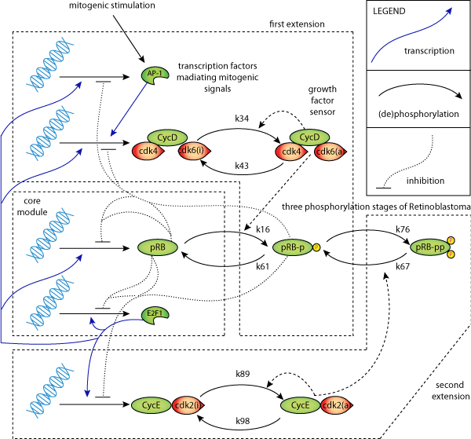

This CellML model will not run in OpenCell as integration failed at t=0 and h=2.19671e-13, the corrector convergence test failed repeatedly or with |h| = hmin Need UNITS and INITIAL VALUES for concentrations
Mathematical models of the cell cycle can contribute to an understanding of its basic mechanisms. Modern simulation tools make the analysis of key components and their interactions very effective. This paper focuses on the role of small modules and feedbacks in the gene-protein network governing the G1/S transition in mammalian cells. Mutations in this network may lead to uncontrolled cell proliferation. Bifurcation analysis helps to identify the key components of this extremely complex interaction network. RESULTS: We identify various positive and negative feedback loops in the network controlling the G1/S transition. It is shown that the positive feedback regulation of E2F1 and a double activator-inhibitor module can lead to bistability. Extensions of the core module preserve the essential features such as bistability. The complete model exhibits a transcritical bifurcation in addition to bistability. We relate these bifurcations to the cell cycle checkpoint and the G1/S phase transition point. Thus, core modules can explain major features of the complex G1/S network and have a robust decision taking function.
The original paper reference is cited below:
'Bifurcation analysis of the regulatory modules of the mammalian G1/S transition', Maciej Swat, Alexander Kel,Hanspeter Herzel 2004 Bioinformatics, 10, 1506-1511. PubMed ID: 15231543
|  |
| Image illustrating model 'Bifurcation analysis of the regulatory modules of the mammalian G1/S transition' |